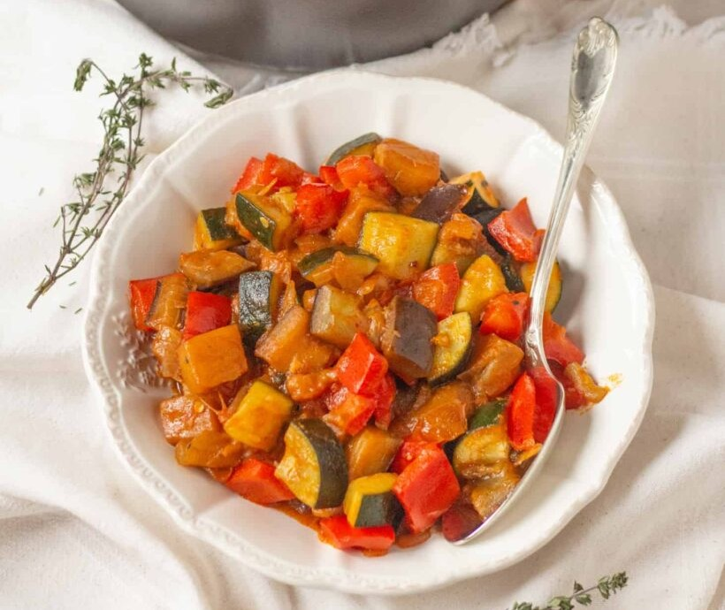

приготовление:
-
Поставить сковороду разогреваться. 2 луковицы почистить, порезать на кубики. Размер всех овощей будет одинаковый, примерно 1см на 1см.
-
Налить на сковороду растительного масла, дать разогреться, выложить лук, посолить, посыпать сухим тимьяном. Пока лук жариться, периодически его помешивать и заняться помидорами.
-
Взять 4 помидора, помыть, разрезать пополам, вырезать плодоножки, нарезать кубиками. Поставить на маленький огонь казан, выложить туда жареный лук, на сковороду добавить масло, выложить помидоры, посолить. Не забывая помешивать помидоры, взять по 1 небольшому цуккини и баклажану, помыть, порезать на кубики.
-
Помидоры отправить в казан, на сковороду добавить масла, выложить баклажан и цукини, почистить и порезать мелко 2 зубчика чеснока, добавить на сковороду, жарить немного доьше, чем предыдущие овощи.
-
Помыть и почистить 1 сладкий желтый перец, со сковороды овощи переложить в казан, перемешать, на сковороду выложить перец, порезать петрушку и отправить к перцу. Перец переложить в казан, налить немного воды в сковороду, смыть остатки петрушки в казан, закрыть крышкой и тушить 1 час.